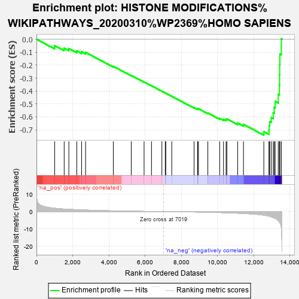

| | | Dataset | rank |
| Phenotype | NoPhenotypeAvailable |
| Upregulated in class | na_neg |
| GeneSet | HISTONE MODIFICATIONS%WIKIPATHWAYS_20200310%WP2369%HOMO SAPIENS |
| Enrichment Score (ES) | -0.7408906 |
| Normalized Enrichment Score (NES) | -2.0387726 |
| Nominal p-value | 0.0 |
| FDR q-value | 0.004688086 |
| FWER p-Value | 0.023 |
Table: GSEA Results Summary

Fig 1: Enrichment plot: HISTONE MODIFICATIONS%WIKIPATHWAYS_20200310%WP2369%HOMO SAPIENS
Profile of the Running ES Score & Positions of GeneSet Members on the Rank Ordered List
| PROBE | GENE SYMBOL | GENE_TITLE | RANK IN GENE LIST | RANK METRIC SCORE | RUNNING ES | CORE ENRICHMENT | | 1 | SUV39H2 | | | 1007 | 1.933 | -0.0496 | No |
| 2 | SMYD2 | | | 1531 | 1.466 | -0.0695 | No |
| 3 | H3F3B | | | 1789 | 1.313 | -0.0717 | No |
| 4 | SETD9 | | | 2228 | 1.091 | -0.0901 | No |
| 5 | EED | | | 2494 | 0.976 | -0.0971 | No |
| 6 | SETMAR | | | 2715 | 0.888 | -0.1020 | No |
| 7 | SET | | | 4247 | 0.433 | -0.2096 | No |
| 8 | SETDB2 | | | 5238 | 0.239 | -0.2797 | No |
| 9 | SETDB1 | | | 5948 | 0.132 | -0.3304 | No |
| 10 | SMYD4 | | | 6358 | 0.077 | -0.3597 | No |
| 11 | HIST1H3H | | | 6932 | 0.009 | -0.4019 | No |
| 12 | SETD7 | | | 7118 | -0.013 | -0.4154 | No |
| 13 | EZH2 | | | 7148 | -0.016 | -0.4173 | No |
| 14 | SMYD3 | | | 7477 | -0.052 | -0.4409 | No |
| 15 | H3F3A | | | 8712 | -0.225 | -0.5292 | No |
| 16 | SMYD5 | | | 8903 | -0.258 | -0.5400 | No |
| 17 | HIST1H3E | | | 8909 | -0.260 | -0.5370 | No |
| 18 | SETD3 | | | 8953 | -0.270 | -0.5367 | No |
| 19 | EZH1 | | | 9472 | -0.379 | -0.5702 | No |
| 20 | AEBP2 | | | 10127 | -0.553 | -0.6114 | No |
| 21 | SETD4 | | | 10337 | -0.611 | -0.6190 | No |
| 22 | SETD6 | | | 10480 | -0.659 | -0.6211 | No |
| 23 | SUV39H1 | | | 10523 | -0.671 | -0.6156 | No |
| 24 | EHMT2 | | | 11120 | -0.913 | -0.6479 | No |
| 25 | PRDM2 | | | 11442 | -1.071 | -0.6579 | No |
| 26 | KMT2E | | | 12566 | -2.072 | -0.7143 | Yes |
| 27 | SETD5 | | | 12852 | -2.597 | -0.7021 | Yes |
| 28 | EHMT1 | | | 12867 | -2.633 | -0.6694 | Yes |
| 29 | ASH1L | | | 12888 | -2.705 | -0.6361 | Yes |
| 30 | SETBP1 | | | 12975 | -2.978 | -0.6043 | Yes |
| 31 | KMT2B | | | 13086 | -3.420 | -0.5686 | Yes |
| 32 | SETD2 | | | 13139 | -3.615 | -0.5261 | Yes |
| 33 | SETD1A | | | 13194 | -3.891 | -0.4802 | Yes |
| 34 | NSD1 | | | 13364 | -5.165 | -0.4264 | Yes |
| 35 | KMT2A | | | 13428 | -5.942 | -0.3549 | Yes |
| 36 | SETD1B | | | 13437 | -6.092 | -0.2774 | Yes |
| 37 | DOT1L | | | 13444 | -6.328 | -0.1967 | Yes |
| 38 | KMT2D | | | 13454 | -6.490 | -0.1141 | Yes |
| 39 | KMT2C | | | 13534 | -9.554 | 0.0025 | Yes |
Table: GSEA details [plain text format]
Fig 2: HISTONE MODIFICATIONS%WIKIPATHWAYS_20200310%WP2369%HOMO SAPIENS: Random ES distribution
Gene set null distribution of ES for HISTONE MODIFICATIONS%WIKIPATHWAYS_20200310%WP2369%HOMO SAPIENS